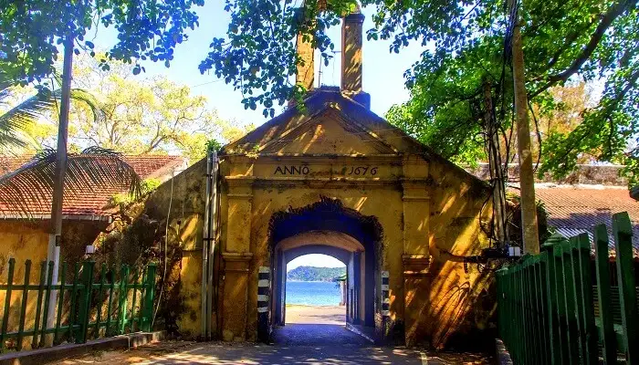
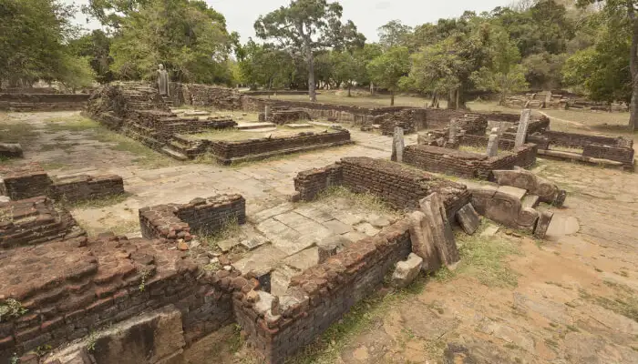
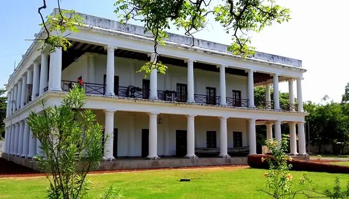
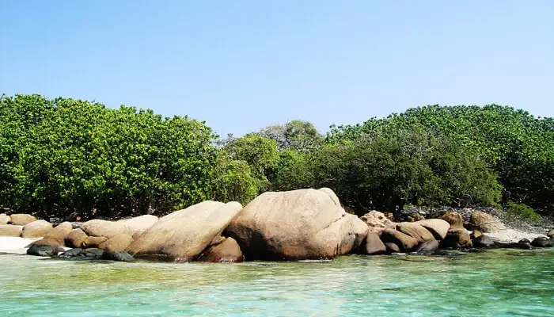

Sitting prettily on a remarkable natural harbour on the north-east coast of Sri Lanka, this charming town with oodles of
history and interesting sites is a great escape from the touristy south. From ancient temples & forts to breathtaking beaches, coves
and a maritime museum, Trincomalee has lots to offer to the discerning travellers. Whether you seek solace at the tranquil Buddhist
viharas & Hindu temples or unravel marine mysteries at the fascinating Pigeon Island, there is no dearth of places to visit in Trincomalee.
So, put on your travelling boots, sprinkle some wanderlust and join us on a sojourn to explore the best places to visit in Trincomalee,
Sri Lanka.
1. Koneswaram Temple
Undoubtedly one of the first sites to be ticked off the Trincomalee tourist map is this revered temple located atop a cliff inside Fort Fredrick.
This important Hindu pilgrimage site displaying Darvidian architectural style is believed to be one of the Panch Ishwarams(five abodes of Shiva) with
a swayambhu lingam. The shrine exudes sacred vibes and is a wonderful place for seeking solace in the divine presence. Surrounded by magnificent views of
the Indian Ocean, this fabulous temple tops our list of places to visit in Trincomalee..
2. Fort Frederick

This important historical landmark with an imposing entrance is a must-do for history and nature enthusiasts when you visit Trincomalee. While the history is
interesting, the presence of freely-roaming spotted deer adds charm to the stroll through this fort. Built by the Portuguese, Fort Fredrick is partly under
military occupation and also houses a famous Buddhist vihara and sacred Hindu temple. Breathtaking sunsets and sweeping views of Trincomalee bay and town make
the visit truly rewarding. You can take a tuk-tuk to the fort and also buy some trinkets from the stalls inside.
3. Pathirakali Amman Temple
The spectacular gopuram of this Kali temple with its vibrant colours and myriad sculptures catches your eye from a distance, while the unique interiors will
leave you spellbound. Also called the Kali Kovil, you can feel the powerful and benevolent presence of the goddess in this popular Durga temple in the heart
of the city. Of all Trincomalee temples, this one is sure to leave you awestruck with its colourfully adorned walls and spiritual vibes.
4. Velgam Vehera

One of the best places to visit around Trincomalee, this ancient Buddhist site with a modern day monastery is just perfect for spending a couple of quiet hours.
With a beautiful setting amidst tall trees and lawns, strolling through the remains of this ancient Budhhist temple built by King Devanamiyatissa is a calming
experience. The original crystalline Buddha statue still stands tall and is a sight to behold while the new monastery offers a chance to meditate in this
serene place. The ruins with intriguing inscriptions and the awesome jungle surrounding it, make this visit worthwhile.
5. Maritime and Naval History Museum

Located in a beautifully restored 17th century Dutch mansion, this informative museum offers important insights into Sri Lankan maritime history. Amongst the
most interesting places to visit in Trincomalee, the ground floor takes you through the country's naval history dating back from Marco polo's time with models
depicting naval scenes and some video presentations. The exhibits on the first floor throw light on the marine ecosystem with special emphasis on the flora
and fauna of East coast. With free entry and knowledgeable guides, this wonderful museum also offers lovely views of the bay.
6. Nilaveli Beach
One of the finest beaches in Sri lanka, the pearly sands, the breath-taking coastline this is a tangible proof of serenity in our island. It is so unique that the
feeling you experience when you see it, is unique itself. One can really connect with nature at this beach at an intense level. This is a place where most people
come to take a break from the hectic lives and rejuvenate. The beach is ideal to visit durin April and October. The Sun is at its most intense during this period
so that you can work out on your tan. Watersports are also a huge feature in this beach, surfing and windsurfing are the major excursions undertaken here. This
is a must in everyones itinerary when visiting Sri Lanka
7. Uppuveli Beach
Located about 10 minutes outside of Trincomalee lies the small beach village of Uppuveli. Similarly, to Nilaveli Beach, Uppuveli is a long, sandy beach with clear
waters and no waves. It attracts a bigger crowd than Nilaveli Beach as there is more going on in the area. However, there is more pollution and debris along the
shoreline and the beach itself isn't one that I would rave about.
8. Pigeon Island National Park

Undoubtedly one of the best places to visit near Trincomalee, the pristine and beautiful Pigeon Island National Park off the coast of Nilaveli is a great getaway
from the city. Comprising of two small islands, the national park is home to the endangered rock pigeons, vibrant marine life and stunning rock formations.
The powdery white sands, glittering rock pools and the shallow turquoise waters make this a memorable trip, along with ample snorkelling opportunities right off
the beach.
9. Trincomalee War Cemetery
This final resting place of the British and local soldiers who laid down their lives during World War II, is a quiet solemn place. Set in a well-maintained garden,
this is one of the six Commonwealth war cemeteries in Sri Lanka. As you pay homage to the fallen soldiers and sailors and walk through the poignant place, you gain
insight into what price we pay for wars. One of the most humbling places to visit in Trincomalee, the war cemetery is also a place for quiet contemplation.
10. Seruwila Mangala Raja Maha Vihara
Counted amongst the holiest Buddhist sites in Sri Lanka, this temple is one of the important places to visit in Trincomalee for the spiritually inclined travellers.
The 2nd century stupa was originally built by King Kavantissa and holds the sacred frontal bone of Lord Buddha. Thousand of devotees visit this sacred Buddhist
Vihara every year to pay homage and seek blessings of the enlightened one. Also visit the new complex with a huge statue of Buddha; remember to be modestly dressed
and remove your footwear.
11. St Mary's Cathedral
Tucked away in a quiet part of the city, this beautiful small Catholic Cathedral is just a walking distance away from the beach. Built in 1852, the attractive
blue and white facade of the cathedral exudes warmth and tranquillity. The well-maintained site also houses a small school with young children who are happy to
interact with visitors.
12. kanniya Hot Water Springs
Kanniya Hot Springs is a site with hot water wells located in Eastern Province, Trincomalee District of Sri Lanka. Average temperature of these wells is
42 Celsius and the temperature is slightly different to one another. Kanniya Hot spring is popular tourist destination in Trincomalee district and both
local & foreign travelers. Currently this is managed by Pradeshiya Sabha (Local Council) of Trincomalee. People in this area believe that this hot water
is good for some skin deceases and it has healing power for Arthritis and Rheumatic.